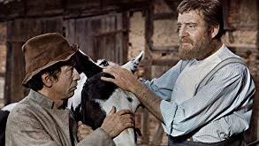

#10324 Klaus und Kläuschen
Alternativ: Der kleine und der große Klaus (Englischer Titel)
 
 IMDB-Wertung: 6.5 / 10
IMDB-Wertung: 6.5 / 10  Metascore: 0
Metascore: 0 
Jahr: 1971
Dauer: 61 Minuten
FSK: 6
Land: Ost-Deutschland Studio: VEB Progress Film-VertriebTonspuren:
Untertitel:
Auflösung: 720p (956x720) Größe: 1587 MB
Genre: Familie
Regisseur: Celino Bleiweiß
Drehbuch: Hans Christian Andersen, Celino Bleiweiß, Horst Hardt, Claus Küchenmeister, Wera Küchenmeister
Soundtrack: Rainer Hornig
Darsteller:
- Monika Woytowicz als Frau des kleinen Klaus
- Jirí Vrstála als Bauer Preben
- Fred Düren als Kleiner Klaus
- Siegfried Kilian als Großer Klaus
- Hannes Fischer als Müller
- Marylu Poolman als Müllerin
- Arno Wyzniewski als Küster
- Christiane Lanzke als Magd
- Siegfried Hömke als Knecht
- Günter Götze als Seifensieder
- Rosemarie Herzog als Bürgersfrau
- Eva Schäfer als Fischweib
- Jürgen Huth als Erster Schuster
- Johannes Wieke als Zweiter Schuster
- Willi Neuenhahn als Erster Gerber
- Rainer Etzenberg als Zweiter Gerber
- Dorothea Richter als Bäuerin
- Siegfried Fiebig als Gendarm
- Ulrich Anschütz als Erster Betrunkener
- Hans-Joachim Finke als Zweiter Betrunkener
- Walter Wystemp als Töpfer
- Peter Köhncke als Offizier
- Ramona Gierth als Seejungfrau
- Michael Ziehm als Sohn von Kleinen Klaus
- Gela Götze als Tochter vom Kleinen Klaus
Datei: X:\Märchen\Klaus und Kläuschen (1971, FSK6, 956x720).mkv seit 29.12.2018
Festplatte: Kinder-Filme+Trick
 Es gibt insgesamt 61 Filme in der Gruppe 'Märchen'
Es gibt insgesamt 61 Filme in der Gruppe 'Märchen'